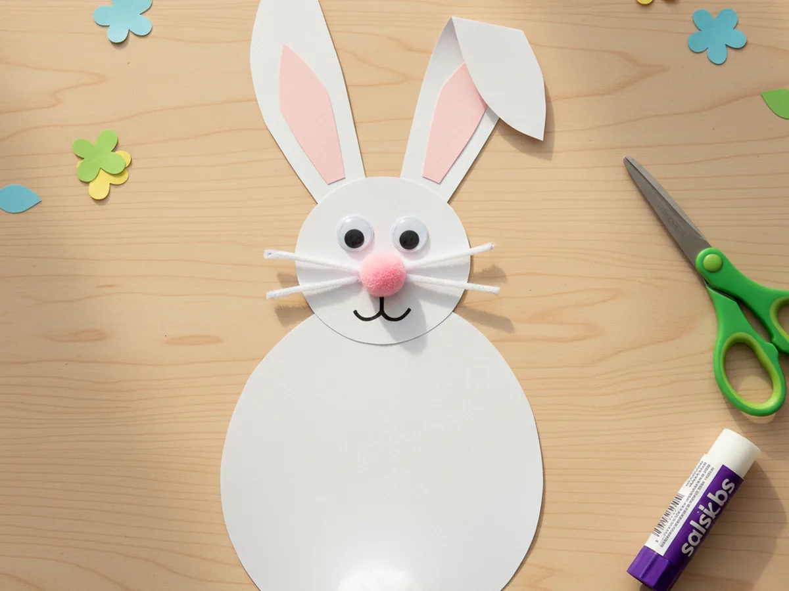
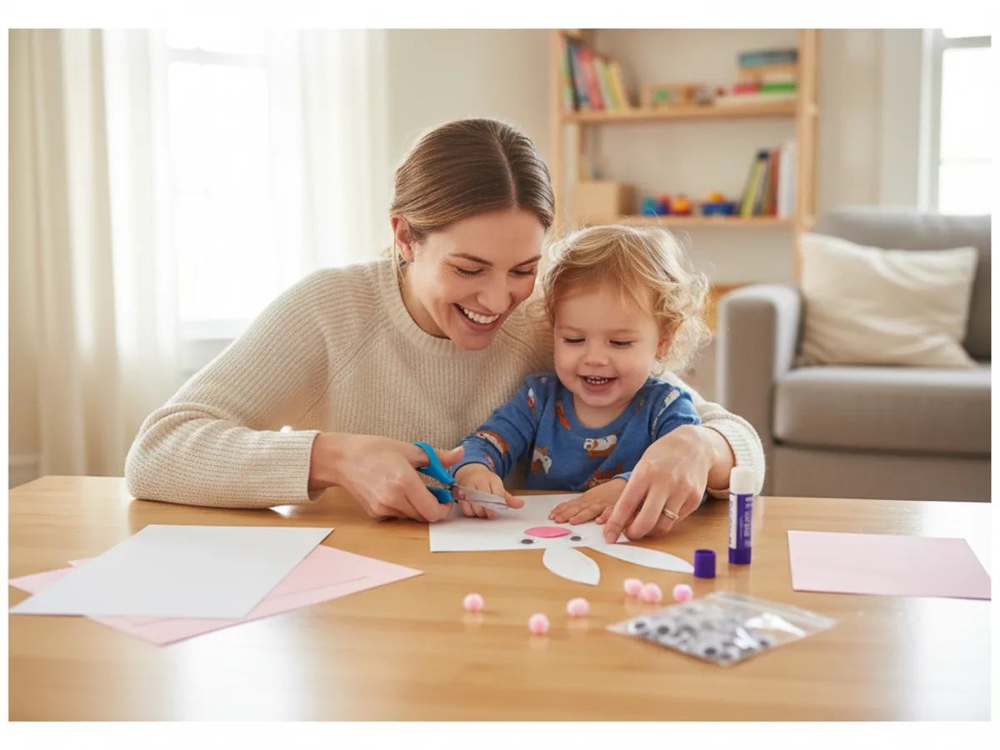
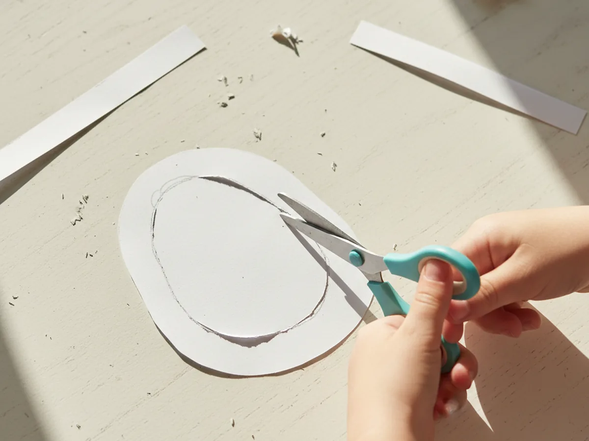
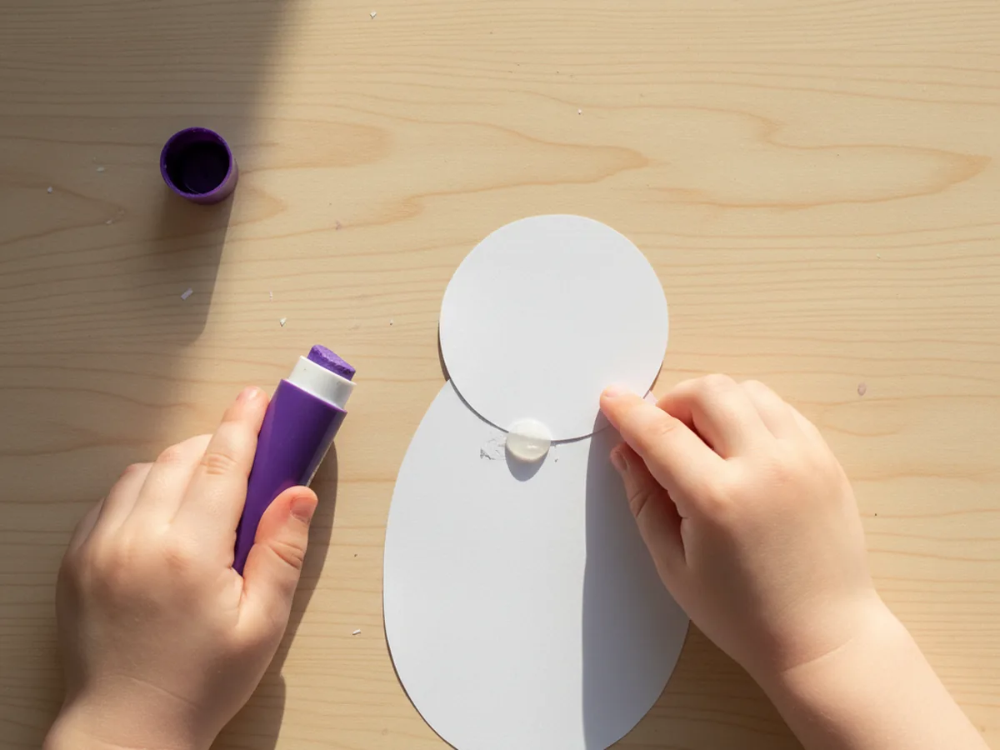
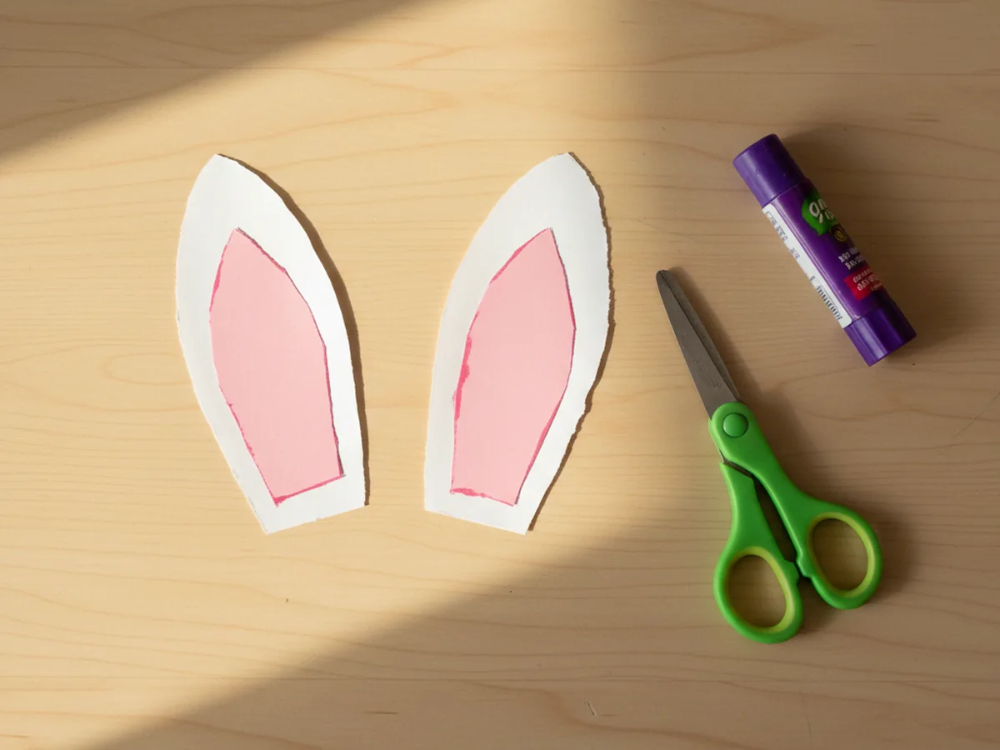
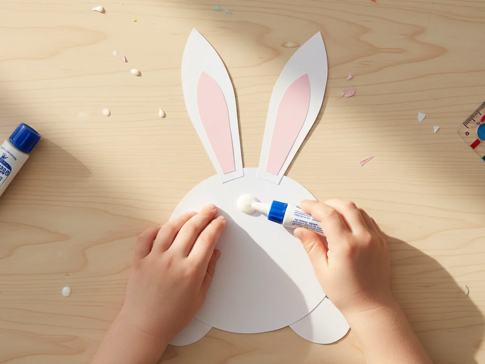
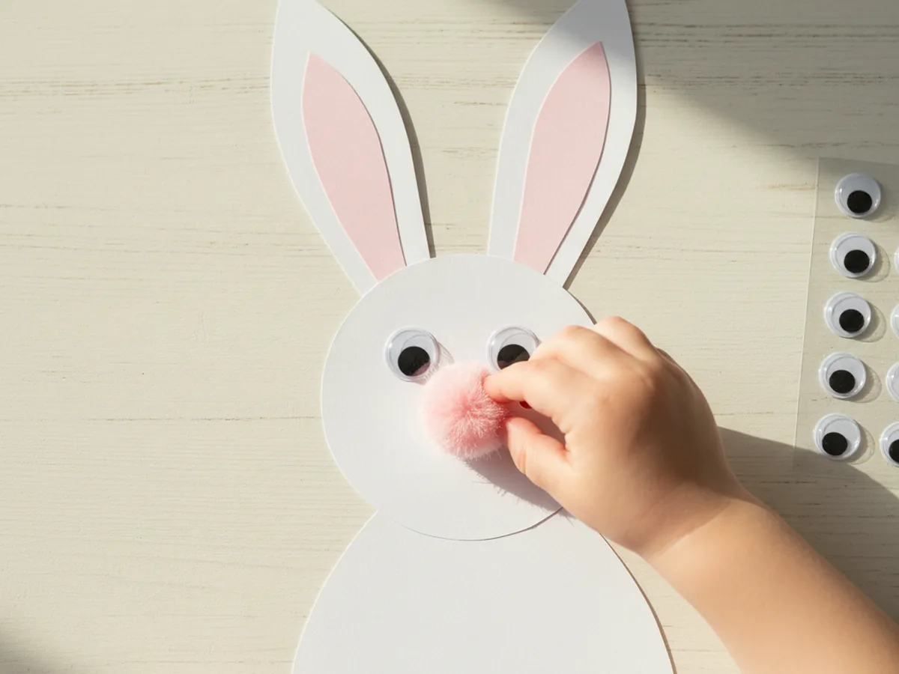
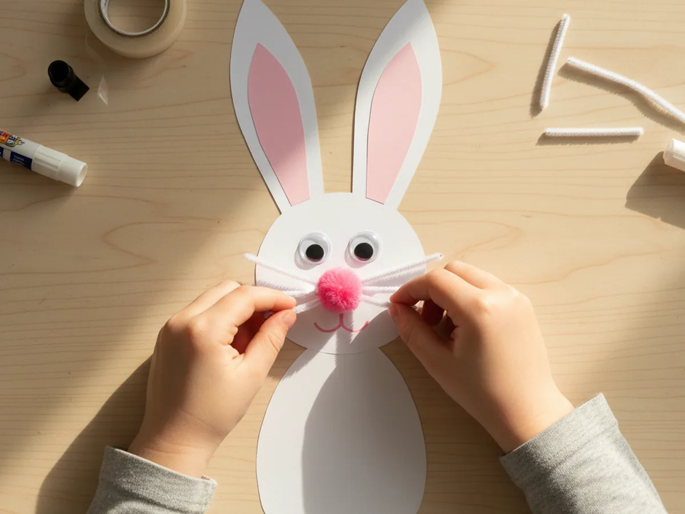
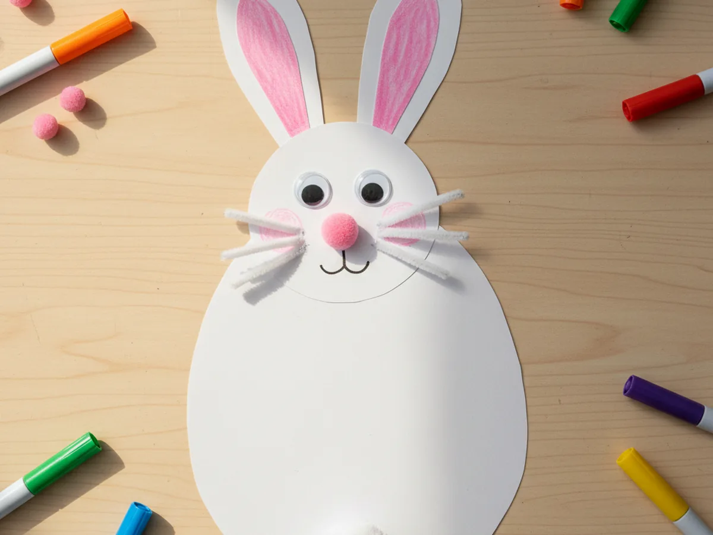

If your little one has been asking to make something soft, cute, and just a tiny bit fluffy, this craft paper bunny is the sweetest little project to do together. It uses a few sheets of construction paper, a pink pom pom for the nose, and a couple of pipe cleaner whiskers, and the whole thing comes together in about 30 minutes. There is barely any mess, no painting needed, and the finished bunny is so charming you will probably want to keep it on the fridge for weeks. 🐰
This paper bunny craft works beautifully all year round, but it is especially perfect for spring and the weeks leading up to Easter. Even toddlers can help with most of the steps, and bigger kids will love adding their own little personality touches at the end. Every bunny ends up looking a little different, which is exactly what makes this so special.
Why Kids Love This Craft
There is just something about bunnies that makes children absolutely melt. The long ears, the fluffy tail, the twitchy little nose, all of it sparks instant joy. When a child gets to make their own craft paper bunny, that joy turns into something they can hold in their hands, name, and show off proudly. There is real magic in hearing your child say "look mommy, this is my bunny."
This project is also wonderful for little hands. Cutting curves builds fine motor control. Choosing where to glue the eyes and nose encourages decision-making. And pressing on the soft pom pom nose feels really satisfying for sensory-loving kids. It looks like simple play, but a lot of quiet learning is happening underneath.
Best of all, this simple paper bunny craft gives you a low-stress, screen-free moment together. You can chat about how rabbits hop, what they eat, or where they live. You can even make up a name and a little story for your bunny. Those quiet side conversations are often the part children remember most.

What You'll Need
Here is everything you will need to make this easy craft paper bunny at home. Set everything out on the table beforehand so the activity flows nicely once your child sits down.
- Crayola Construction Paper (240 sheets, assorted colors), you will mainly need white and pink sheets for this craft.
- Fiskars Pointed-Tip Kids Scissors, perfectly sized for small hands and great for cutting curves.
- Elmer's All Purpose School Glue Sticks (30-pack), washable, easy to grip, and clean to work with.
- DECORA Self-Adhesive Googly Eyes (assorted sizes), two per bunny, just peel and press.
- Light Pink Craft Pom Poms (100 pack), you only need one small one for the nose, plus a fluffy one for the tail.
- White Chenille Pipe Cleaners (100 pack), used for the cute little bunny whiskers.
- Crayola Broad Line Markers (10 classic colors), for drawing the mouth and adding final details.
- A pencil, for tracing the body, head, and ear shapes before cutting.
- Clear tape or extra glue, useful for holding the whiskers and tail in place.
Step-by-Step Instructions
This paper bunny craft step by step is genuinely easy to follow. Take it one little step at a time and let your child do as much as they can on their own.
Step 1: Cut the Bunny Body
Start with a sheet of white construction paper. Use a pencil to draw a large rounded oval, about the size of a small pear, in the middle of the page. This will be your bunny body. Once the shape is drawn, have your child cut along the line. Wobbly edges are completely fine and actually make the bunny look more friendly and handmade.
For toddlers and younger preschoolers, draw the oval for them and let them practice cutting along the curve. If the body comes out a bit lumpy or wonky, do not worry. A slightly imperfect bunny always has the most personality.

Step 2: Cut and Attach the Bunny Head
From the same white construction paper, draw a smaller rounded circle, about the size of a clementine, that will become the bunny head. Cut it out and have your child glue it onto the very top of the body so it slightly overlaps the upper edge of the oval. This creates the classic bunny silhouette where the head sits proudly on top of the body.
Press firmly for a few seconds so the glue takes hold, and gently smooth out any bumps. From this point on, the project will really start to look like a bunny.

Step 3: Cut the Ears
Now for the most fun part. From white paper, draw two long rounded ear shapes, each about the height of the bunny head. Cut them out together. Then take a sheet of pink construction paper and cut two slightly smaller ear shapes that will become the inner ears. Have your child glue the pink shapes right in the middle of the white ears, leaving a thin white border showing all the way around.

Step 4: Glue the Ears Behind the Head
Flip the bunny so the back is facing up. Apply glue to the bottom inch of each ear and press them onto the top of the back of the head, so when you flip the bunny over, both ears stand up tall above the face. You can angle them straight up or let one tip slightly to the side for a cute floppy look.
This is the moment when the bunny really comes alive, and most kids cannot help grinning when they see those ears pop up. 🌷

Step 5: Add the Eyes and Pink Nose
Peel the backing off two self-adhesive googly eyes and let your child press them firmly onto the front of the bunny head, near the upper middle. Two medium eyes look the cutest, but two small ones placed close together work just as well. Then add a tiny dot of glue right under the eyes and let your child press a small pink pom pom on as the nose.
Once the nose goes on, the bunny suddenly has a whole personality and feels like a real little friend. Our last bunny somehow ended up looking very surprised, which the kids thought was hilarious.

Step 6: Add the Whiskers
Cut six short pieces of white pipe cleaner, each about an inch and a half long. Add a tiny dab of glue or a small piece of tape to the back of the bunny head, just behind the cheeks, and press three pipe cleaner pieces on each side so they fan out like whiskers. The whiskers should sit right next to the pink pom pom nose so they look like they are growing from the bunny's face.
If you do not have pipe cleaners, you can cut six thin strips of white paper instead. Both versions look just as sweet.

Step 7: Add the Mouth, Tail, and Final Details
Use a black washable marker to draw a tiny upside-down Y just below the pink nose, with a small curved smile under it. From there, glue a fluffy white pom pom onto the bottom back of the bunny body so it peeks out as a fluffy little tail. Your child can also use markers to add rosy cheeks with a pink crayon, tiny dots inside the ears, or even draw little flowers next to the bunny on the table. Every extra detail makes the craft paper bunny feel even more theirs. ✨
When the bunny is finished, hold it up and gently make it hop across the table while wiggling your nose. Most kids burst into giggles right then, and that is exactly the moment this whole craft is for. 💛

Variations to Try
Easter Basket Bunny: Make several bunnies in different colors of pastel construction paper and glue them onto a large light blue background, along with cut paper grass strips and small Easter egg shapes. Suddenly you have a whole little spring scene your child made themselves, and it deserves a spot on the fridge.
Paper Plate Bunny: Swap the white oval for a small paper plate as the bunny body, then add the head, ears, and face the same way. The result is a bigger, sturdier bunny that hangs beautifully in a window or on a wall.
Handprint Bunny Ears: For a special keepsake version, trace your child's hand on white paper twice and use the cutout handprints as the ears, with the fingers naturally forming the long ear shape. Add the pink inner detail down the middle of each handprint, and you have a sweet memory craft you will treasure for years.
Final Thoughts
This craft paper bunny tutorial is one of those projects that feels almost too easy for how cute the result is. It uses a handful of simple supplies, takes about 30 minutes from start to finish, and leaves you with something so charming that your little one will want to show it off to anyone who walks through the door. More than that, it gives you both a quiet, joyful moment of making something together. 🌷
If your child makes their own little paper bunny, I would love to see it! Pin this article on Pinterest so other craft-loving mamas can find it easily. Happy crafting!
More Crafts You'll Love
If your little one enjoyed this craft paper bunny, they will absolutely adore these other sweet spring-themed paper crafts too: